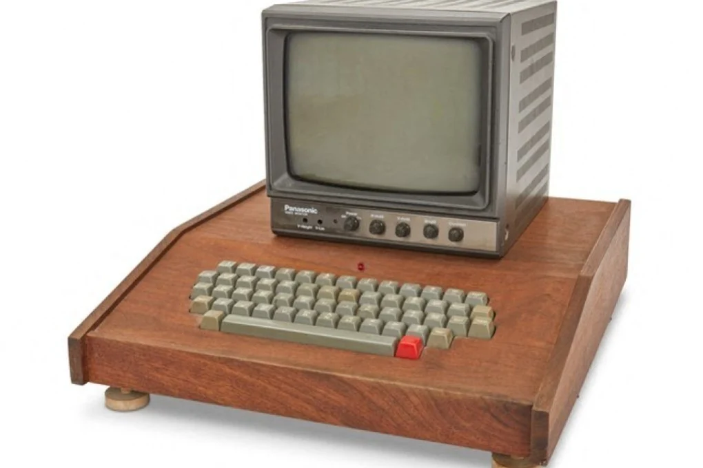
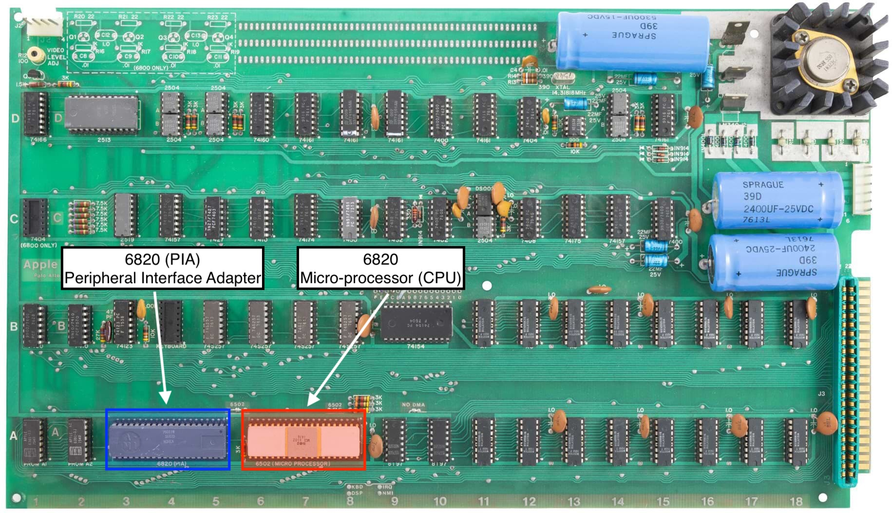
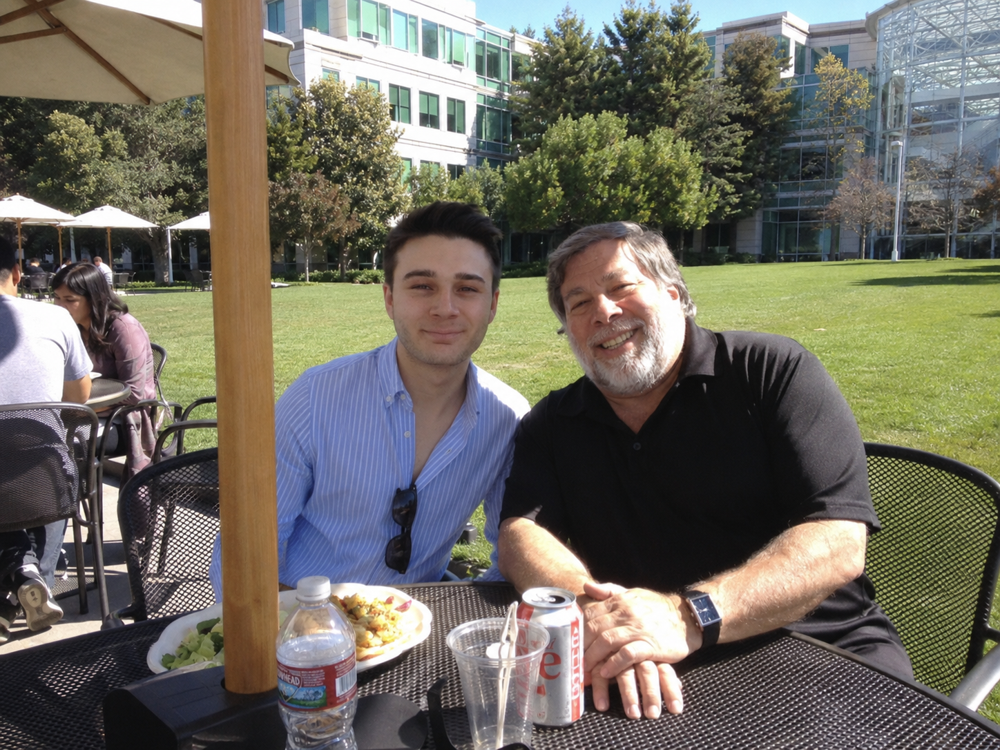
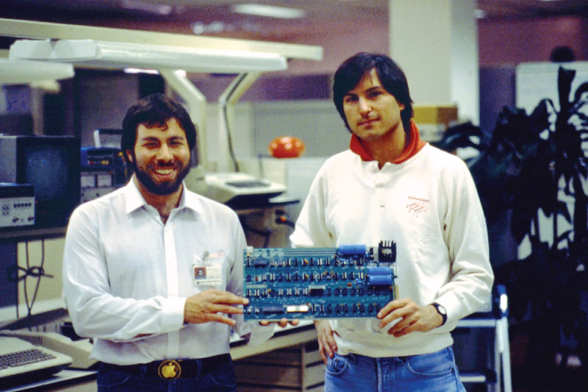

The previous page introduced the primitives of digital electronics: gates, adders, multiplexers and decoders. A microprocessor combines these primitives at scale. The MOS Technology 6502, the processor of the Apple 1 (1976), contains 3,510 NMOS transistors arranged into a register file, an arithmetic logic unit, an instruction decoder and a control sequencer. This page relates each block to the gate-level primitives and then presents a transistor-level simulation of the die.
The Apple 1 was the first product of the Apple Computer Company, designed by Steve Wozniak and offered for sale in July 1976 at a list price of USD 666.66. It was sold as a populated printed circuit board only; the purchaser supplied a power supply, an ASCII keyboard and a video monitor. About two hundred units were built between July 1976 and September 1977.
The board carried four kinds of integrated circuit. The MOS Technology 6502 microprocessor handled computation. A Motorola 6820 Peripheral Interface Adapter (PIA) connected the processor's bus to the keyboard and the video output. Eight 4-kbit DRAM chips provided 4 kB of system memory. A small PROM held the 256-byte Wozniak Monitor, the only system software present at power-up.
The choice of processor was determined by price. The Intel 8080 and Motorola 6800 of the same period sold for roughly USD 300 each. MOS Technology introduced the 6502 in September 1975 at USD 25 per unit, an order of magnitude lower, which made a personal computer commercially viable.




A programmable logic array, or PLA, is a two-level combinational circuit that realises any boolean function as a sum of products. The first level (the AND-plane) forms product terms from the inputs and their complements. The second level (the OR-plane) sums chosen product terms onto each output. Both planes are programmable: a connection placed at any cross-point selects which signals participate.
The accompanying diagram is a small PLA with four inputs, eight product-term lines and four outputs. The vertical rail at the top carries each input and its complement, so eight signals enter the AND-plane. A dot marks every input connected to a horizontal product line; the value on that line is the AND of those signals. A product line with dots on $A_1$ and $\overline{A_0}$, for example, evaluates to $A_1 \cdot \overline{A_0}$. The OR-plane works the same way: each output line reads the OR of the product lines that have dots on it.
The instruction decoder of the MOS 6502 is a PLA with the same structure at a larger scale. The eight bits of the opcode register feed the AND-plane, around 130 product terms decode the legal opcodes, and the OR-plane drives the control lines that sequence each instruction. The structure that asserts one of four outputs in the diagram asserts one of more than a hundred control signals on the chip.
LDA #, STA zp and
NOP. The corresponding PLA occupies the top of the 6502 die in Section 03.
The simulator below is Visual 6502, by Greg James, Brian Silverman and Barry Silverman. A production chip was decapsulated, photographed and traced into its 3,510 transistors. The simulator propagates logic levels through that network one half-cycle at a time, so the behaviour of the registers, ALU, decoder and control logic follows from the transistor network; no abstract instruction-set model is used.
A short "Hello World" routine is loaded at $\$0000$ as an example. Each iteration writes a character to the display register at $\$\text{D012}$, which is forwarded to the terminal pane, saves the raw character at $\$\text{E1}$, and increments a counter at $\$\text{E0}$, so the zero-page memory table changes as the program runs.
The controls beside the chip run, stop, step and set the speed of the simulation. With animate on, the logic-state overlay updates every half-cycle and colours the nodes at logic high by function: clocks, address bus, data bus, registers and decoder. Clicking a polygon reports the underlying node in the processor state panel.
; Apple 1 "Hello World" demo program. ; Walks a null-terminated string at $0020, ORs each byte with $80 ; (Apple 1 high-bit ASCII), writes it to the display register at ; $D012, and halts in an infinite loop once the terminator is reached. ; $E0 holds a byte counter; $E1 holds the most recent raw character. *= $0000 $0000 A2 00 LDX #$00 $0002 B5 20 LOOP: LDA $20,X ; load string[X] $0004 F0 0C BEQ DONE ; null terminator: exit $0006 85 E1 STA $E1 ; save raw character to zero page $0008 09 80 ORA #$80 ; set high bit (Apple 1 ASCII) $000A 8D 12 D0 STA $D012 ; output character to display $000D E6 E0 INC $E0 ; increment byte counter $000F E8 INX $0010 D0 F0 BNE LOOP $0012 4C 12 00 DONE: JMP DONE ; halt $0020 "HELLO, WORLD!" $0D $00 ; CR + null terminator
halfcyc:0 phi0:0 AB:0000 D:00 RnW:1
PC:0000 A:00 X:00 Y:00 SP:00 nv-bdizc
Hz:
0.0